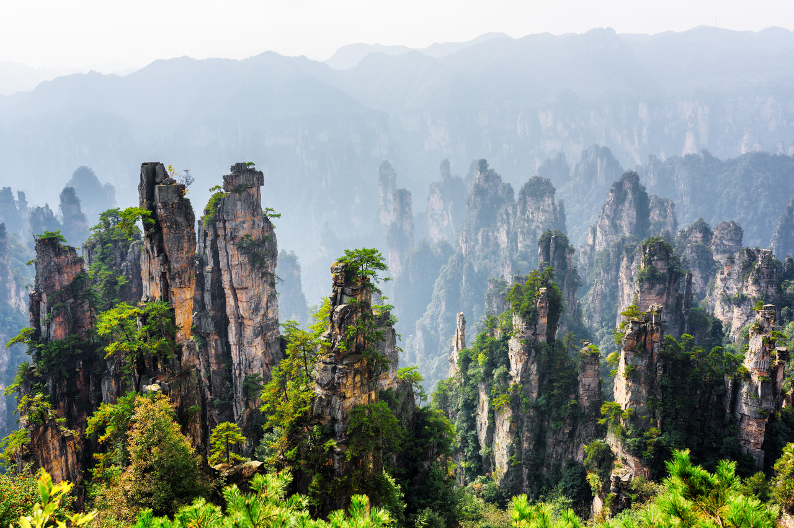

张家界·奇峰异石

张家界的石英砂岩峰林形成于约3.8亿年前，是世界上独一无二的地貌类型，被命名为“张家界地貌”。
袁家界的“阿凡达悬浮山”原型——哈利路亚山（乾坤柱）更是享誉全球，吸引了无数游客前来打卡。
除了自然景观，张家界的土家族摆手舞、哭嫁习俗等民俗文化也独具魅力，每年的“张家界国际森林保护节”更是展现了当地的生态与文化融合。
凤凰古城·民俗风情

凤凰古城始建于清康熙年间，至今保留着完整的明清古建筑群。沱江泛舟是必体验的项目，船工的山歌回荡在江面，
岸边的吊脚楼、虹桥、万名塔构成了一幅绝美的水乡画卷。
苗族银饰、蜡染、姜糖制作等非遗技艺，以及四月八、赶秋节等民俗节日，让凤凰古城成为体验湘西文化的最佳目的地。
湖南景区实拍音视频